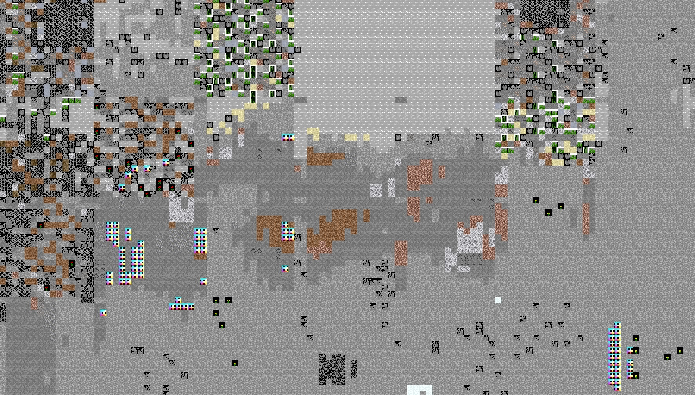

Trevor Bivi
| Software Engineering Student | Home Projects Work Experience About GitHub |
| Minecraft Tools | RuneScape Bot API | Garden Watering System |
| Tetris Bot | Steam Market Analyser | 3D Computer Game |
| Phone Game |
Jan 2017 - May 2017
Minecraft ToolsThis project was programmed in Python 3. Many popular libraries were used, such as OpenCV, numpy, zlib and the win32 collection.
This is a collection of Python modules that provide ways to automate a variety of Minecraft actions. The main functionality is listed below...
Bot API
The file read_memory.py uses the win32 library to read the Minecraft process memory. This module is also used by another module, player_action.py, which contains a variety of functions for completing actions such as...
- Reading the player’s game coordinates and rotation from process memory
- Pressing keyboard keys and mouse buttons – even when window is in the background
- Rotating player
- Walking to specified coordinate
- Looking at a specified coordinate
- Verifying the player is looking at a specified block
"HD" Art Bot
board_builder.py uses the bot API for the creation of massive in game images designed to be viewed on maps. Any image up to the size of 512x512 pixels can be created in game with the help of board_generator.py. This module contains an algorithm for creating best representation of an in game image using blocks of the users preference. The user can also choose if they want the additional color detail added by tethering and exploiting elevation shading.

A sample image created using the HD art bot
World Save Reader
read_save_file.py is able to parse the region file format and read block information. This can be useful to useful to use with the bot API.
Desirable World Finder
Generate_worlds.py uses player_actions.py and read_save_file.py t automatically makes worlds and searches them for desired traits. Example code has already been written to search for oceans, villages, mineshafts, mob spawners and jungle biomes. It is possible to generate a bird’s eye view image of the entire generated world to help speed up final inspection of worlds that are automatically found.
Read_memory.py needs to have base memory pointers recalculated be work with 1.13. Also, read_save_file.py is not perfectly able to parse the block states of the new 1.13 chunk format yet. I would also like to improve the bird’s eye view feature, add elevation shading and icons to represent where specified desired traits are located.

A small section of a bird's eye view image. Work in progress!
{kind=link}
A small section of a bird's eye view image. Work in progress!